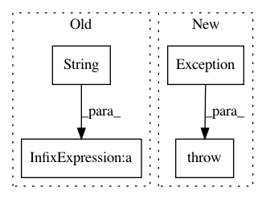

5e76a51d56f9383d28264810a6f4db7ba12998fe,dashboard/head.py,DashboardHead,run,#DashboardHead#,137
Before Change
// Write the dashboard head port to redis.
await self.aioredis_client.set(dashboard_consts.REDIS_KEY_DASHBOARD,
self.ip + ":" + str(self.http_port))
await self.aioredis_client.set(
dashboard_consts.REDIS_KEY_DASHBOARD_RPC,
self.ip + ":" + str(self.grpc_port))
After Change
self.http_port += 1
logger.warning("Try to use port %s: %s", self.http_port, e)
else:
raise Exception(f"Failed to find a valid port for dashboard after "
f"{self.http_port_retries} retries: {last_ex}")
http_host, http_port, *_ = site._server.sockets[0].getsockname()
logger.info("Dashboard head http address: %s:%s", http_host, http_port)
// Write the dashboard head port to redis.
In pattern: SUPERPATTERN
Frequency: 4
Non-data size: 4
Instances
Project Name: ray-project/ray
Commit Name: 5e76a51d56f9383d28264810a6f4db7ba12998fe
Time: 2021-02-23
Author: fyrestone@outlook.com
File Name: dashboard/head.py
Class Name: DashboardHead
Method Name: run
Project Name: pysb/pysb
Commit Name: 689c4f5319e2413472337956e6f9e81c008dfb4a
Time: 2009-07-12
Author: jmuhlich@bitflood.org
File Name: Pysb.py
Class Name: MonomerPattern
Method Name: __init__
Project Name: geometalab/OSMDeepOD
Commit Name: 9f720bd92903b417e987e95b7c74c9521e9eb7f5
Time: 2016-08-03
Author: samuel.kurath@gmail.com
File Name: src/data/multi_loader.py
Class Name: MultiLoader
Method Name: _try_download
Project Name: dataiku/dataiku-contrib
Commit Name: 514206df82a10a98a8425c9621abce3f579f49ec
Time: 2016-07-01
Author: jeremy.greze@dataiku.com
File Name: googlesheets/python-connectors/googlesheets-sheet/connector.py
Class Name: MyCustomDatasetWriter
Method Name: flush